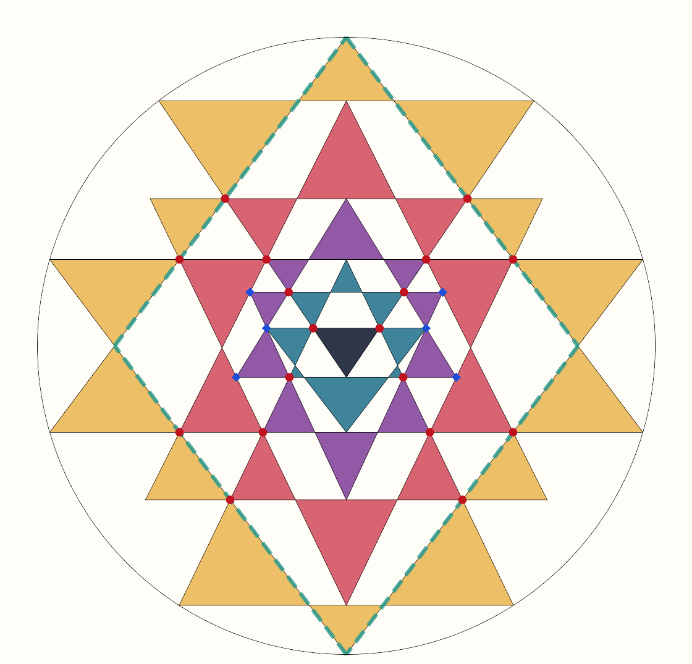
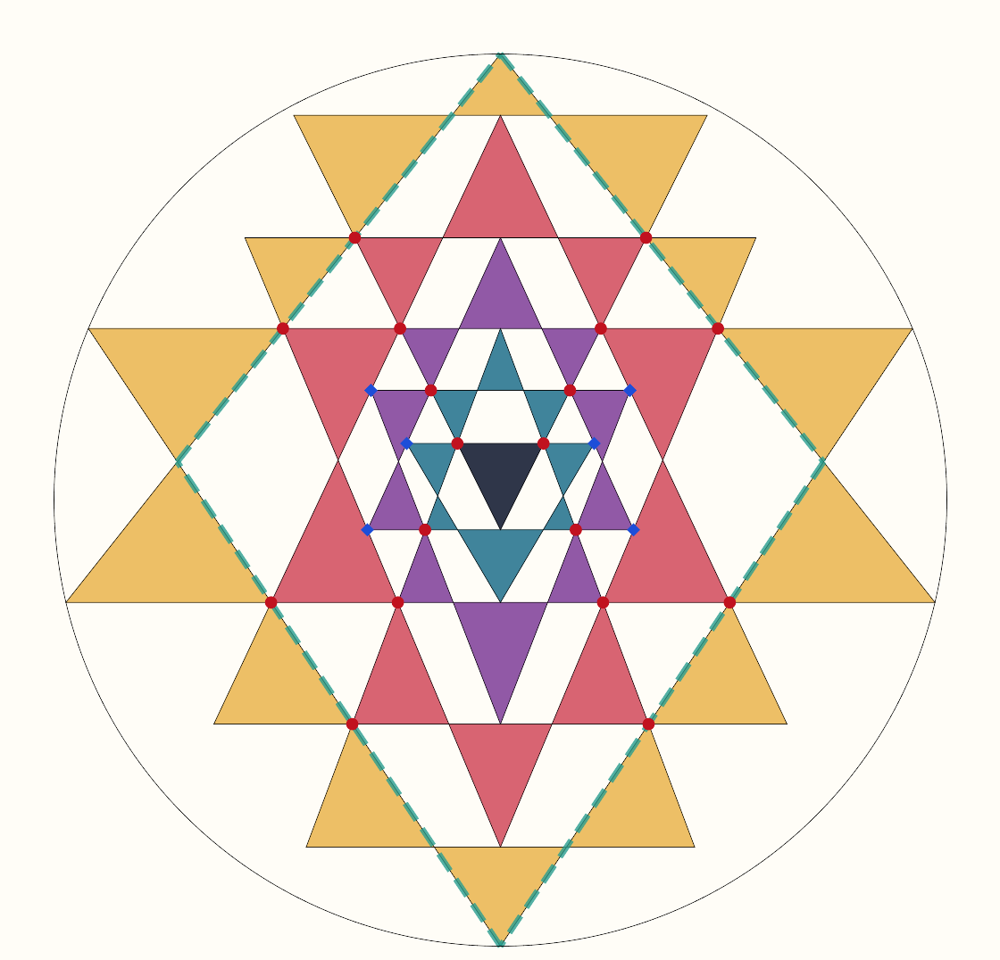
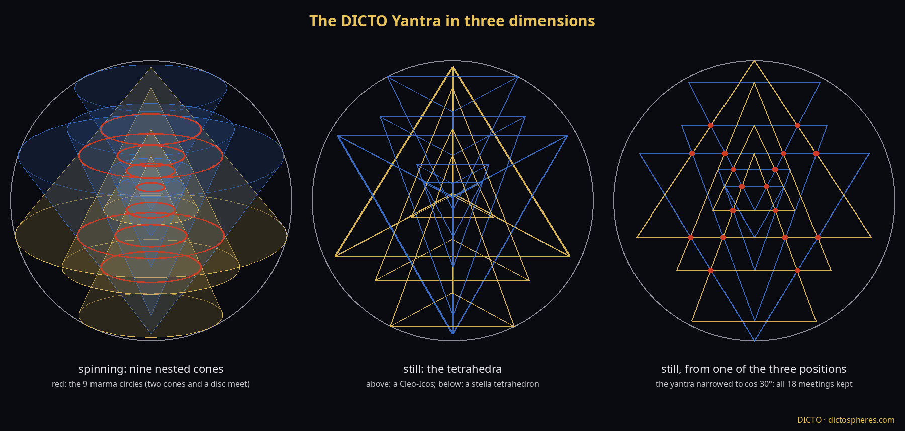
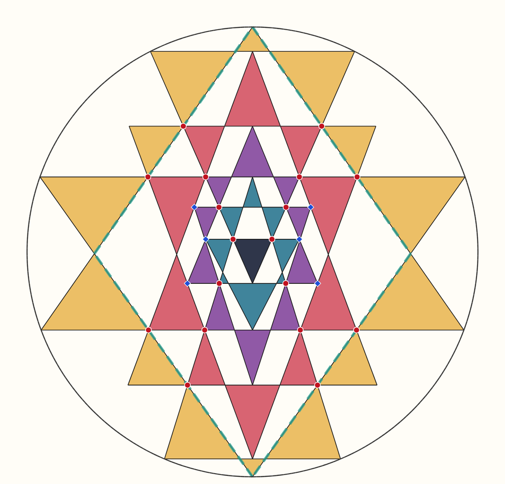
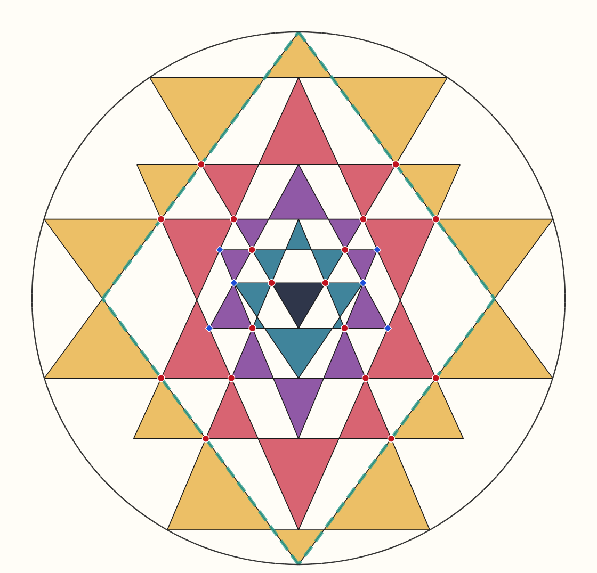

The Śrī Yantra's nine triangles must meet three at a time at 18 points (the marmas). Huet (2002) showed the figure has four free parameters and solved it numerically; Chiodo (2021) proved the whole family can be drawn with straightedge and compass; Kulaichev (1984), Rao and Pustynski (2014) fixed one yantra by four extra conditions, known to 15 figures, and Pustynski thought an exact solution "probably impossible"; Kavi Mahesh (2023) used rational heights with 16 of the 18 points exact. Sources checked are listed in the study's README.


The next steps, one by one: the triangles become tetrahedra in a sphere; the upright rhombus becomes the stella octangula; the tetrahedra spin; and the great pair is made of DICTO's Cleo-Icos (the icosahedron's face pyramid). Spun, a Cleo-Icos is a cone of slope 2/φ² = 0.764 and the stella's tetrahedron one of slope 1/√2 = 0.707; Huet's classical yantra has 0.813 above and 0.705 below, Kulaichev's 0.750 for both. Pustynski noticed two extra tiny regions in Kulaichev's yantra (45, not 43). The count is decided by the actual slopes, not by equal or unequal great triangles: the stella rhombus (equal) has the traditional 43, while the Cleo rhombus and several kites have 45 regions and 28 sandhis. (Corrected 8 November: an earlier printing said every rhombus has 45.) Keeping the Cleo but taking the kite's proportion gives the Cleo-Octangula, a Cleo-Icos above and the stella's tetrahedron below, with the top and bottom small triangles' corners on the circle, gives the Cleo-Octangula yantra: valid, with every condition met to 80 digits, and exactly the traditional 43 triangles (14, 10, 10, 8, 1). Its lower great triangle sits exactly at one third, and its next depth is 0.536 against Huet's 0.537. Its numbers need both √5 (the Cleo) and √2 (the stella).
In three dimensions. Every triangle becomes a tetrahedron with its tip on the axis and a level base. Spinning, each sweeps a cone, and the flat yantra is exactly the cut through the axis of the nine nested cones: the 18 meeting points become 9 circles where two cones and a level disc meet. Still, the tetrahedra show the yantra from three positions around the equator, on the three great circles through the axis, narrowed to cos 30°, which keeps every meeting.

With both great triangles fixed, only two of the three demands can hold: both small triangles on the circle, and the bindu centred. DICTO kept the stella. Its lower great triangle is the stella octangula's tetrahedron exactly; the upper one takes its own slope, 0.695886 (apex 69.67°, against the stella's tetrahedral 70.53°). Then every condition holds at once: both small triangles' corners on the circle, the bindu centred, and the traditional 4 up, 5 down, 43 triangles, 18 marmas and 24 sandhis.

The gnomon. A gnomon like DICTO's Julias: with the bindu centred, a copy of the whole yantra fits the bindu's inscribed circle exactly, so the yantra outside that circle is a gnomon and the yantras nest without end. On the Cleo-Octangula the ratio is 0.0631; on the perfect stella yantra 0.0563.

A viewpoint might do it. One family of perspectives keeps the circle exactly round (a tilted circle seen from the right point; in modern terms the moves of Klein's hyperbolic plane along the axis). It keeps every line straight, every meeting and crossing, every level base and every corner on the circle; it changes only the two slopes, one divided and the other multiplied by the same factor, so their product stays fixed, and it moves the bindu's centre. Seen from the viewpoint that centres the bindu, the DICTO Yantra satisfies every condition at once: both small triangles on the circle, the bindu centred (so the gnomon nesting holds), and 43 triangles, 18 marmas and 24 sandhis. Its slopes become 0.7336 above and 0.7364 below; their product is still exactly the Cleo-Icos slope times the stella's. The perfect yantra is the Cleo-Octangula in perspective.

A side of Antonius takes the place of the stella: Antonius, the golden antiprism, is the Cleo-Icos's own partner (Cleo + Antonius + Cleo make the golden rhombohedron, DICTO's golden fix of #44). Its side faces have slope exactly 1/φ, so the great pair's slopes multiply to 2/φ³, all golden. Since a viewpoint keeps that product, the perfect yantra of the family follows at once: both small triangles on the circle, the bindu centred, 43 triangles, 18 marmas and 24 sandhis. This is the DICTO Yantra.

A simpler formula (DICTO). In natural coordinates (circle positions for the corners that touch the circle) the yantra with both small triangles on the circle is one quadratic for the bottom depth, one equation of degree 10 for the top corner, and a plain fraction for the next depth; the blind searches failed only because the old coordinates hid this.
The exact algebraic form of Kulaichev's own yantra: the elimination did not finish in its 20-minute limit; it is recorded to 60 digits.